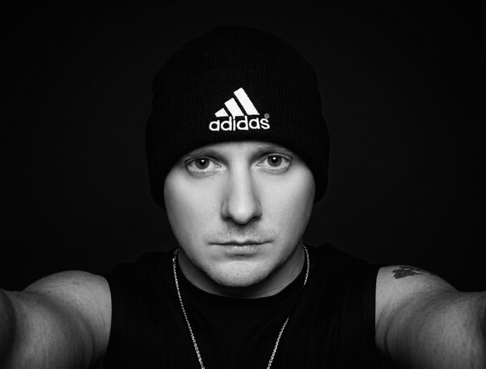
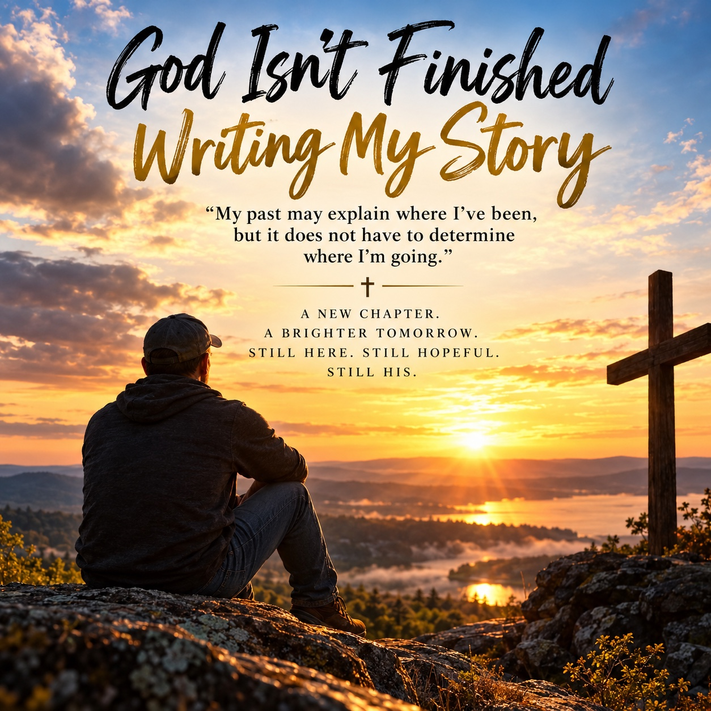

📖 Articles & Inspiration
Original reflections on early recovery, loneliness, daily routines, faith, and rebuilding a meaningful life.
Read recovery articlesOne Day at a Time. One Step Toward a New Life.
I’m Steven. After 34 years of struggling with alcohol, I’m rebuilding my life through recovery, faith, and one honest day at a time. Whether you’re seeking help or walking beside someone who is, you’re welcome here.
My name is Steven. I created Recovery Journey to share the real experience of rebuilding my life through recovery, faith, and daily choices. The past cannot be rewritten, but the next chapter is still ours to shape.
Inspired by the rugged beauty of the Pacific Northwest, this is a place for honest stories, practical support, and new beginnings.
Read My StoryExplore practical recovery articles, treatment center experiences, and encouraging stories from the recovery community.
Original reflections on early recovery, loneliness, daily routines, faith, and rebuilding a meaningful life.
Read recovery articlesA privacy-conscious community review directory is in development. Learn how experiences will be shared and moderated.
Explore treatment reviewsDiscover personal recovery experiences, encouragement, and reminders that no one has to walk this journey alone.
Explore community storiesWhether you're beginning again or building on years of recovery, there's a place for you here.
Find practical first steps, meeting information, and encouragement without judgment.
Get startedExplore connection, healthy routines, purpose, and support through every season.
Keep growingRead recovery FAQs and discover a space for community voices.
Browse FAQs · Community storiesRecovery Journey is a welcoming space for people seeking freedom from addiction, rebuilding their lives, or supporting someone they love. Here you'll find a personal story of recovery, encouragement, faith, and links to trusted resources.
Every small step toward healing matters.
Supportive people and communities can make the journey less lonely.
Your past does not have to determine your future.

Steven Gregory
Founder, Recovery Journey
My name is Steven, and this is my recovery journey.
For 34 years, alcohol was a part of my life. During those years, addiction cost me opportunities, relationships, stability, and much of the life I had hoped to build.
There were times when I felt completely lost, wondering whether I could ever find peace, happiness, or purpose again.
But my story isn't finished.
Today, I'm choosing recovery. I'm learning to face my past, rebuild my life, strengthen my faith in God, and discover who I can become without alcohol.
I created Recovery Journey because I know there are others who feel alone, discouraged, or uncertain about their future.
If you're one of those people, I want you to know that your story isn't finished either.
Recovery isn't about having a perfect past. It's about making a different choice today and finding the courage to keep moving forward.
One day at a time. One step toward a new life.
— Steven Gregory
Faith, hope, and the courage to keep moving forward.

Whatever yesterday held, today is another chance to choose recovery and connection.
“Your past is part of your story, but it does not have to be the end of your story.”
If you need support today, these independent organizations can help you find meetings, treatment information, and people to talk to. You do not have to figure everything out alone.
In immediate danger? Call 911. In the U.S., call or text 988 for crisis support. This site provides personal encouragement and general resources, not medical advice or emergency services.
Reflections on faith, hope, healing, and taking life one day at a time.
Read My Recovery JournalOne day at a time can begin with one small action. Explore free interactive tools for tracking milestones, reflecting, practicing gratitude, and getting grounded.
Explore Recovery ToolsMy Christian faith is part of my story of recovery. Here you'll find Scripture for difficult days, Christian devotionals, and resources for exploring faith and spiritual growth. Wherever you are in your beliefs, you're welcome here.
Joel 2:25 (NLT) reminds me of God’s promise of restoration and the hope of a new beginning.
Scripture references on Recovery Journey use the New Living Translation (NLT).
Explore Faith & Recovery ResourcesFind meetings, explore the Twelve Steps, and discover recovery support.
Explore recovery resourcesPersonal reflections on hope, faith, and beginning again.
Read reflectionsFollow the ongoing journey, one day at a time.
Visit the blog